Editing controls¶
Adding functional elements¶
You can create a new functional element such as a timer, logic switch, special function, curve or variable by tapping on the ‘+’ symbol next to the column headings in the relevant main menu.
On radios without a touchscreen, use the rotary encoder to scroll to the ‘+’ button and then press ENT.
Virtual keyboard¶
On touchscreen radios Ethos provides a virtual keyboard for editing text fields.
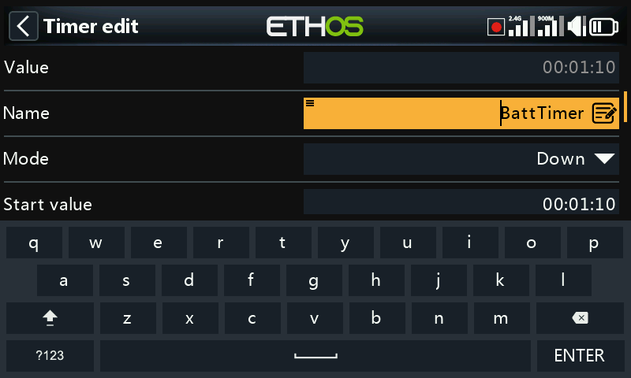
Simply touch on any text field (or click [ENT]) to bring up the keyboard.
Touch the backspace key (above the Enter button) to back space, erasing characters to the left of the cursor. Press the [Page] key to delete characters to the right of the cursor. Once you get to the end on the right, the [Page] key will start deleting any remaining characters to the left of the cursor.
Touch the text field to move the cursor to that position. Alternatively, press the [SYS] key to move the cursor to the left, or the [DISP] key to move it to the right.
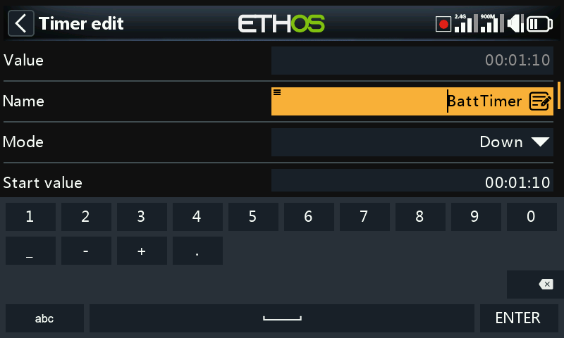
Touch the '?123' or 'abc' key to toggle between alpha and numeric keypads. The numeric keyboard also has the special characters. There is also a caps lock for entering uppercase letters.
Radios without a touchscreen¶
On radios without a touchscreen, press the [ENT] key on any text field to go into edit mode.
Rotate the rotary encoder to scroll through the upper and lower case alphabets and the numerals, followed by the special characters. Press [ENT] to insert the character. The [MDL] key will change the case of the character to the immediate right of the cursor. Any following characters will remain in the new case until the case is changed again.
Press the [Page] key to delete characters to the right of the cursor.
Press the [SYS] key to move the cursor to the left, or the [DISP] key to move it to the right.
Number value controls¶
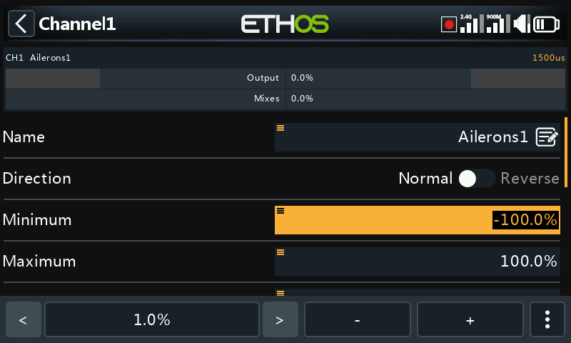
When touching a number value a dialog appear at the bottom of the screen with the number value controls:
-
‘<’ and ‘>’ buttons for changing the step size between the minimum (as appropriate) and going up in decades, e.g. 0.01%, 0.1%, 1.0% or 10.0%.
-
‘-’ and ‘+’ buttons incrementing or decrementing the value by the selected step size. The rotary encoder can also be used to adjust the value.
-
a ‘More’ button on the right for additional options, see below.

The ‘More’ button on the right opens another dialog for additional options:
- the default value
- set to minimum
- set to maximum
- replace the controls with a slider for adjustment, see below
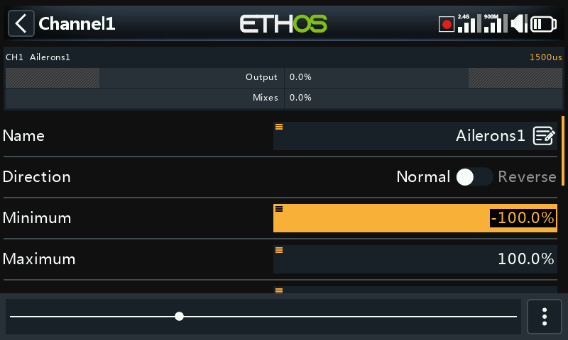
The slider allows for the value to be adjusted quickly. The rotary encoder can also be used.

To revert back to the number adjustment keys, select ‘Disable slider.
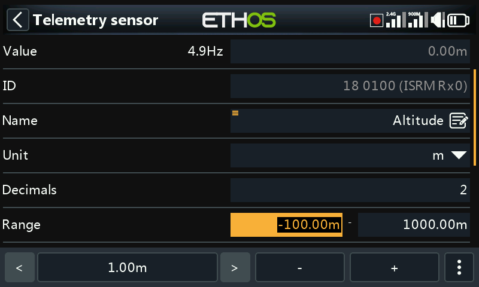
Another example is a telemetry range value, which can be edited in a similar way.
Options feature¶
Ethos has a very powerful 'Options' feature. Almost anywhere a value or source is expected, a long press of the Enter key will bring up an options dialog.
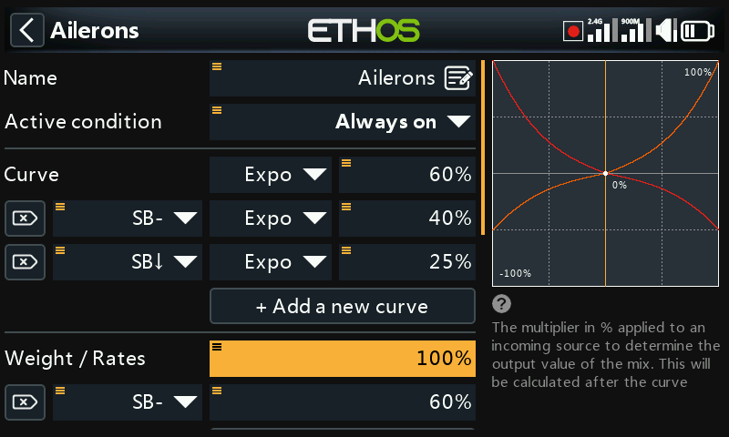
Fields with this feature can be identified by the menu icon (hamburger symbol) in the top left corner of the field.
For radio-level adjustments like Main volume, Speaker mute, Vario volume, Display brightness and Sleep brightness you cannot select a source which is model-dependent (like a logic switch, function switch or a flight mode).
Value options¶
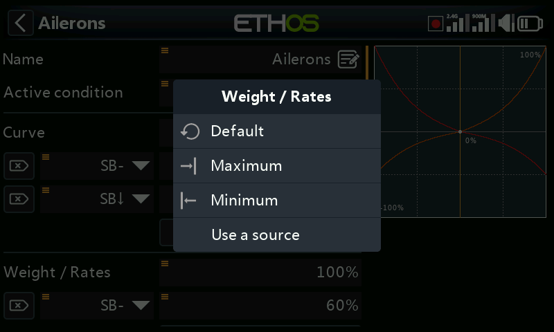
The value options dialog shows which parameter is being configured. In this example you have the choice of setting the weight/rates to maximum, 0, minimum, or to use a source. Using a source like a pot would allow the weight/rates to be adjusted in flight.

If you long press Enter on a value field that has already been changed to use a source, a dialog pops up allowing you to convert the source's current value to a fixed value.
Clicking on 'Options' will bring up options for the source, see below.
Source options¶
Source option for logic switches¶
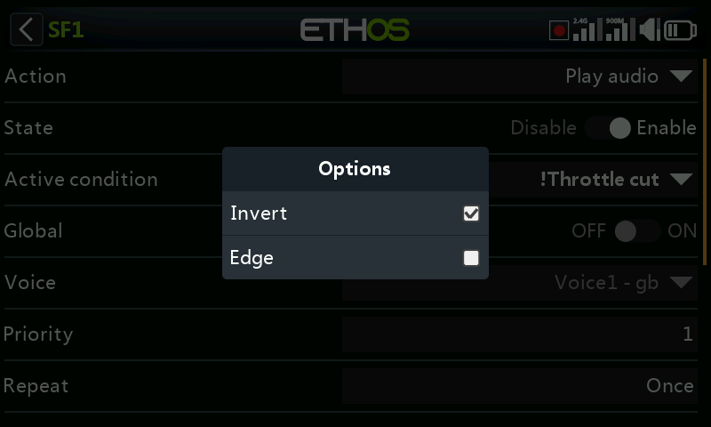
Invert¶
Invert allows a source such as a switch position to be negated or inverted. For example instead of being active when switch SA is up, it would be active when switch SA is NOT up, i.e. in either the mid or down positions.
Edge¶
You can select the 'Edge' option if you need a one-time action when the source transitions from False to True or from True to False. Only the transition is acted upon, not the True or False state.
A ‘†’ character will be displayed as a prefix to the source indicate the Edge option.
Please note that the ‘Edge’ option is available on switches but depending on the context. It is also available on the Sticky logic switch trigger conditions.
Source option for switches¶
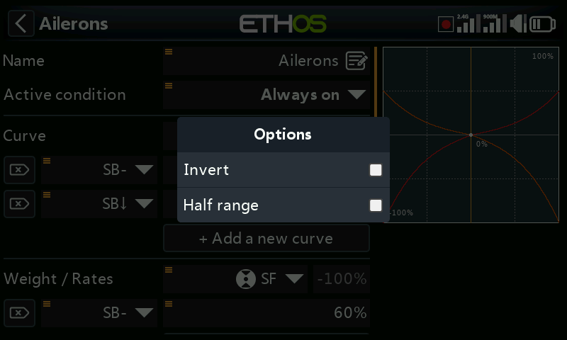
Invert¶
The invert option allows the switch action to be inverted.
Half range¶
The ‘Half range’ option is available when using a 2-POS Switch or logic switch as a source. The range becomes [0-100%] instead of [-100%-100%].
Source option for the throttle input¶
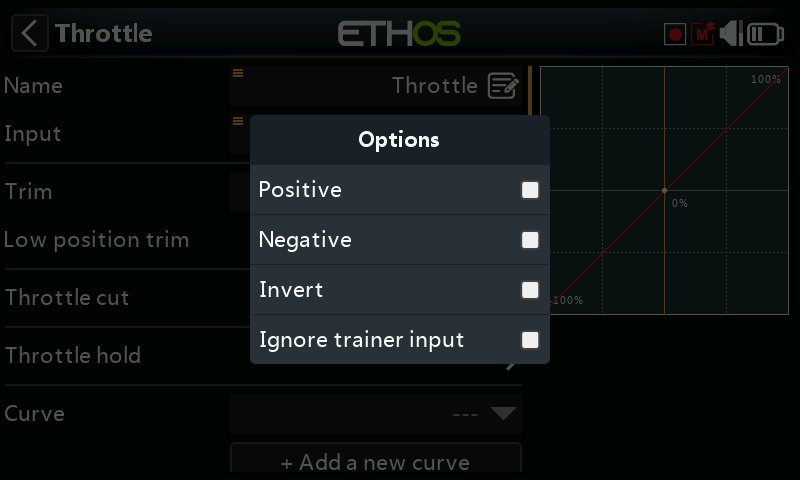
¶- If ‘Positive’ is enabled, only the positive-going half of the input control is fed into the mix.
- If ‘Negative ’ is enabled, only the negative-going half of the input control is fed into the mix.
The above two options are commonly used in surface models where the trigger operates both throttle (positive going half) and brake (negative going half).
- Enable ‘Invert’ to reverse the input control.
- Enabling ‘Ignore trainer input’ prevents the student radio from affecting the mix. Refer to the ‘Ignore trainer input’ section for more details.
Source option for trims¶
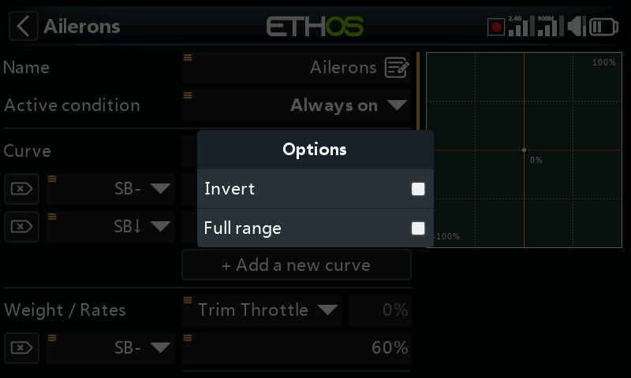
Invert¶
The invert option allows trim action to be inverted, useful in mixes Actions.
Full range¶
By default trims have a range of +/- 25%. When used as a source, trims can optionally be changed to full range +/- 100% (long press Enter on the trim).
Ignore trainer input¶
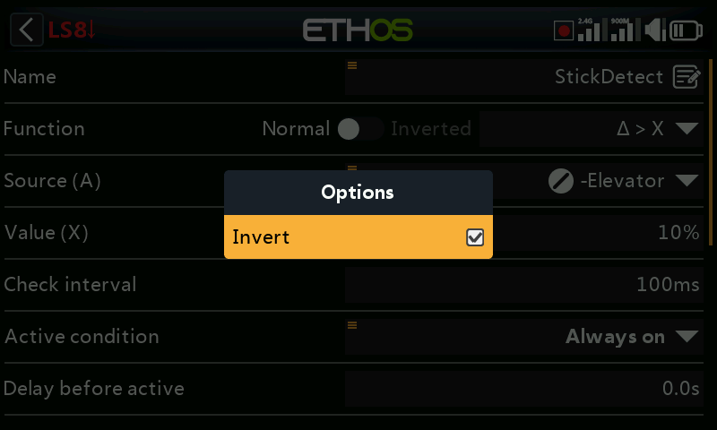
In logic switches the sources may have this option set to ignore sources coming from the trainer input. A typical application is where a logic switch is configured to detect movement of the master trainer’s sticks (e.g. Elevator stick) to allow for instant intervention if things go wrong. This option is needed to prevent the student stick inputs from triggering the logic switch.
Var options¶

Invert¶
Enabling Invert will make the Var value negative in this instance.
Ignore range¶
Some parameters have asymmetric ranges, such as the Min/Max parameters in the Channels section, which have ranges of (-150% to 0%) and (0% to +150%) respectively. When using VARs as a source to adjust the Min/Max parameters, unless the Var has an identical range, it will be necessary to set the Var range to be ignored to avoid unexpected values due to range conversion.
Sensor options¶

On a telemetry source the options dialog allows its maximum or minimum value to be used.

Some sensors have additional options specific to that sensor.